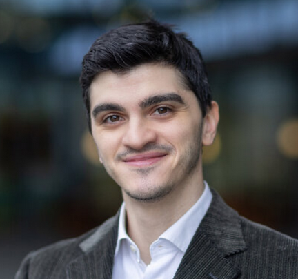
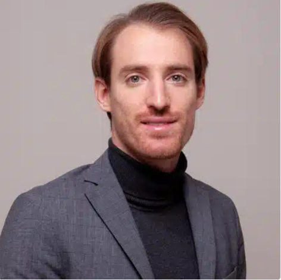
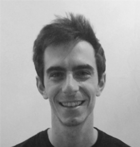
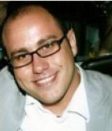

Organizing Committee

Alessandro Palma
Sapienza University of Rome

Alessio Arleo
Eindhoven University of Technology

Simone Guarino
University Campus Bio-Medico

Simone Lenti
Sapienza University of Rome

Emmanouil Spanakis
Computational Biomedicine Laboratory of FORTH-ICS & Technical University of Crete
For any information, please contact Alessandro Palma.
Technical Program Committee (TPC)
- Andrea Agiollo, TU Delft
- Michele Ambrosanio, University of Naples Parthenope
- Marco Angelini, Link Campus University
- Alessio Arleo, Eindhoven University of Technology
- Sergio Arleo, Ospedale di Esine ASST Valcamonica
- Luca Bacco, University Campus Bio-Medico of Rome
- Enkeleda Bardhi, TU Delft
- Simone Bartucci, Sapienza University of Rome
- Fabio Baselice, University of Naples Parthenope
- Tom Baumgartl, University of Cologne
- Jürgen Bernard, University of Zurich
- Filippo Bianchini, Sapienza University of Rome
- Graziano Blasilli, Sapienza University of Rome
- Agnese Bonfigli, University Campus Bio-Medico of Rome
- Silvia Bonomi, Sapienza University of Rome
- Georgios Bouloukakis, University of Patras
- Salvatore Bramante, IMT School for Advanced Studies Lucca
- Marco Calamo, Sapienza University of Rome
- Gianluca Capozzi, Sapienza University of Rome
- Alessia Caputo, Marche Polytechnic University
- Leonardo Christino, Eindhoven University of Technology
- Vittoria Cipollone, Marche Polytechnic University
- Ilaria Condò, University Campus Bio-Medico of Rome
- Edoardo De Rose, University of Calabria
- Elena De Vita, University of Naples Parthenope
- Fabrizio De Vita, University of Messina
- Lorenzo Di Filippo, Sorbonne University
- Alberto Mario Di Giacinto, University Campus Bio-Medico of Rome
- Giorgia Di Pietro, Sapienza University of Rome
- Antonio Emmanuele, Università di Napoli Federico II
- Claudia Ferraro, University Campus Bio-Medico of Rome
- Simone Saverio Fildi, University Campus Bio-Medico of Rome
- Velitchko Filipov, TU Wien
- Roberto Filippini, PhD, senior expert and consultant in risk and safety engineering for Medtech industry
- Giulia Fiscon, San Raffaele University of Rome
- Francesco Fontanella, DIEI, Università di Cassino e del Lazio meridionale
- Grazia Gargano, Università di Bari Aldo Moro and Istituto Tumori Bari Giovanni Paolo II - IRCCS
- Simone Guarino, University Campus Bio-Medico of Rome
- Valerio Guarrasi, University Campus Bio-Medico of Rome
- Houssam Hajj Hassan, Télécom SudParis
- Vasilis Ieropoulos, University of Cyprus
- Jörn Kohlhammer, Fraunhofer IGD
- Simone Lenti, Sapienza University of Rome
- Letizia Mancini, University Campus Bio-Medico of Rome
- Giorgia Mannarino, University Campus Bio-Medico of Rome
- Marta Menci, University Campus Bio-Medico of Rome
- Mario Merone, University Campus Bio-Medico of Rome
- Flavia Monti, Sapienza Università di Roma
- Mabon Ninan, Texas A&M University
- Daniel Pahr, University of Vienna
- George Pallis, University of Cyprus
- Alessandro Palma, Sapienza University of Rome
- Nikolaus Piccolotto, TU Wien
- Mariangela Pinnelli, University Campus Bio-Medico of Rome
- Ruben Piperno, University Campus Bio-Medico of Rome
- Renata Georgia Raidou, TU Wien
- Massimiliano Rak, University Federico II of Naples
- Alexander Rind, St. Pölten University of Applied Sciences
- Francesca Santucci, Università Campus Bio-Medico di Roma
- Vincenzo Saroli, University Campus Bio-Medico of Rome
- Mariagrazia Scarano, Hybrigenics Services and Institut Pasteur de Lille
- Tobias Schreck, Graz University of Technology
- Gaetano Settembre, Università di Bari Aldo Moro
- Emmanouil Spanakis, Foundation for Research and Technology - Hellas, Institute of Computer Science (FORTH-ICS)
- Francesco Vitale, Università degli Studi di Napoli Federico II